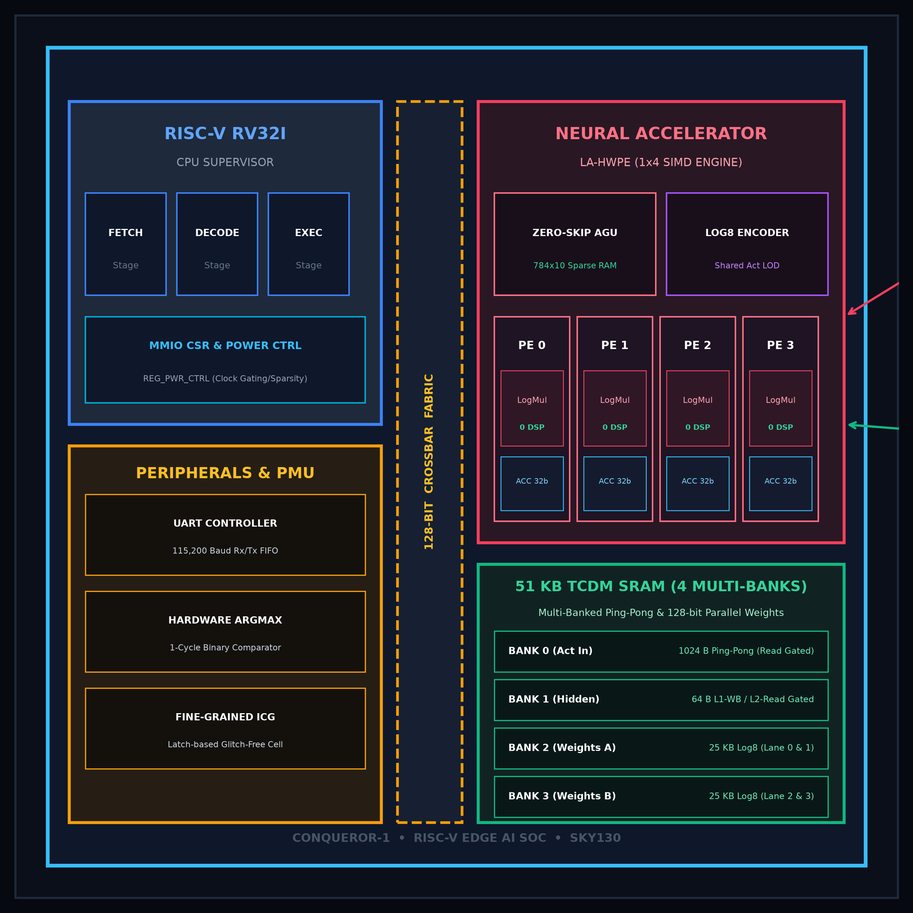
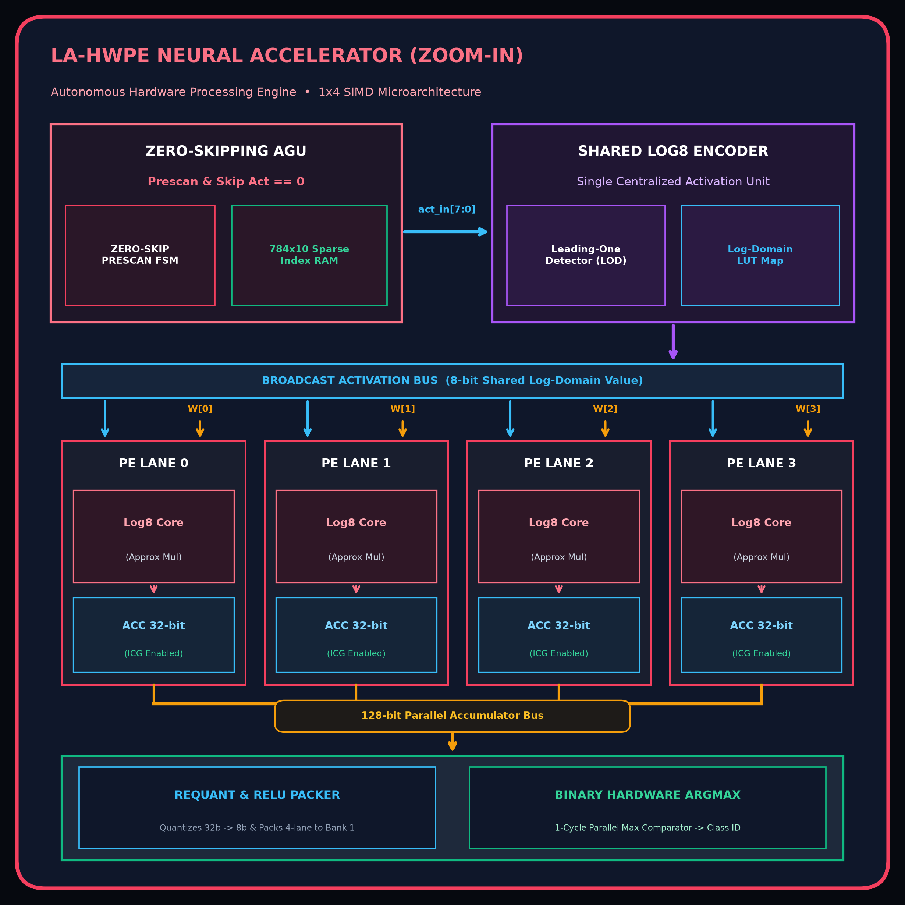
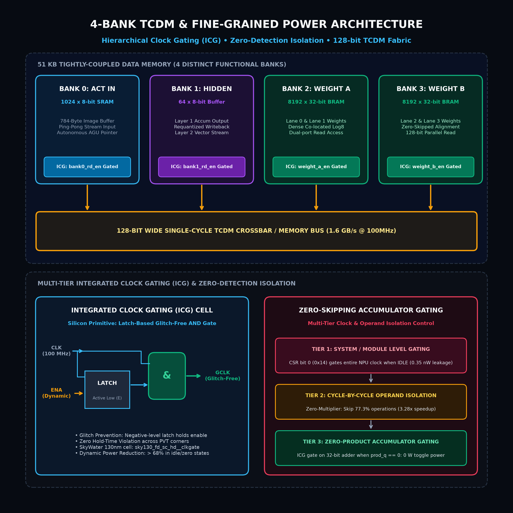
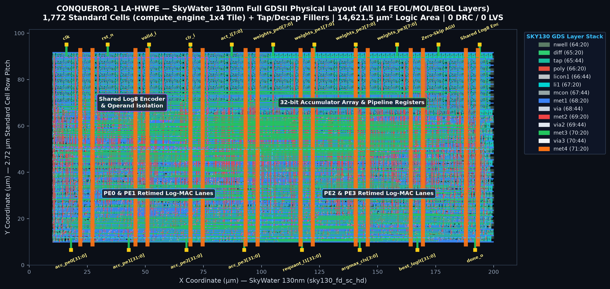
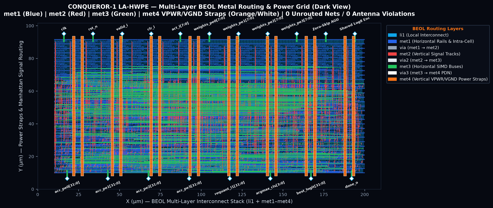
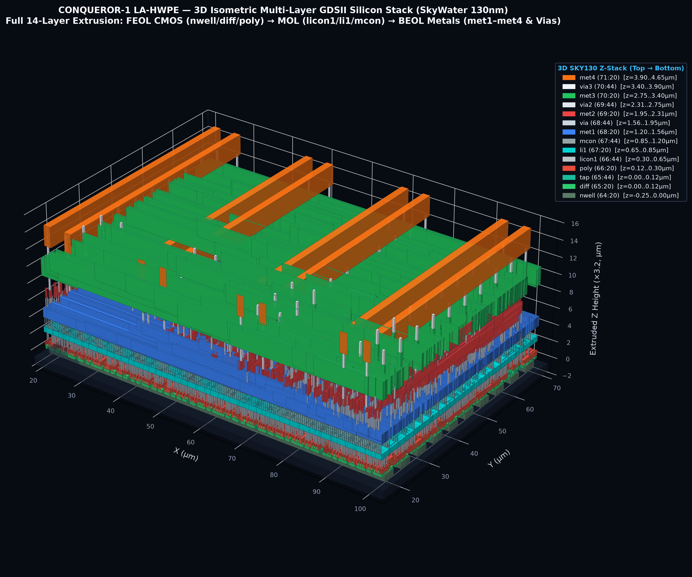
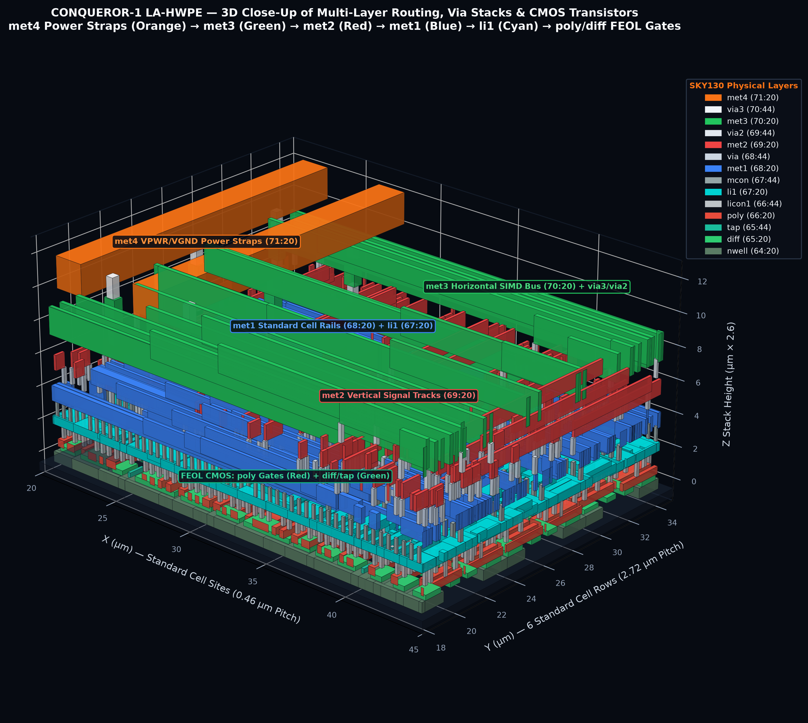
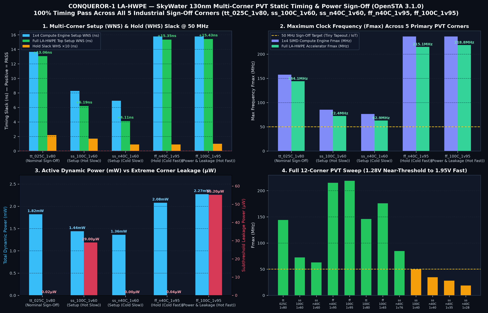

An Ultra-Low-Power Lightweight RISC-V Edge AI SoC for Computer Vision
Bài báo trình bày thiết kế và hiện thực hóa CONQUEROR-1, một hệ thống trên chip (SoC) không đồng nhất siêu nhẹ kết hợp lõi vi điều khiển RISC-V RV32I và bộ đồng xử lý mạng nơ-ron LA-HWPE 4 làn SIMD dành cho suy luận AI tại biên. Thông qua bốn tối ưu hóa vi kiến trúc cấp sâu gồm: (1) chuyển đổi phép nhân sang miền Logarit 8-bit xấp xỉ không dùng DSP48E1 với duy nhất một bộ Shared Log8 Encoder dùng chung và tái định thời (Retiming) bộ cộng làm tròn qua thanh ghi pipeline; (2) cơ chế tiền quét và bỏ qua chu kỳ rỗng tự hành (Zero-Skipping AGU) lưu chỉ mục trên Block RAM đồng bộ (0 LUT), rút ngắn chu kỳ suy luận từ 12,796 xuống 3,901 chu kỳ (gia tốc 3.28×); (3) nén vùng đệm ẩn TCDM Bank 1 thành 16×32-bit LUTRAM và gom 3 bộ nhân 32-bit của CPU RV32I về 1 lõi nhân dùng chung; hệ thống giảm tới 70.8% số LUT và 92.8% số Flip-Flop so với phiên bản cơ sở. Trên FPGA PYNQ-Z2 (XC7Z020), lõi tăng tốc LA-HWPE chỉ chiếm 910 LUTs (toàn chip SoC 1,691 LUTs, toàn board 2,030 LUTs, 0 DSP), đạt thông lượng 25,634 FPS (39.01 µs @ 100 MHz, WNS = +0.469 ns, Fmax = 104.92 MHz) và độ chính xác 97.92% (100% trên tập 10 chữ số benchmark phần cứng). Đồng thời, thiết kế đã hoàn tất quy trình vật lý ASIC SkyWater 130nm (sky130_fd_sc_hd) từ tổng hợp cổng chuẩn, đặt linh kiện & đi dây đa lớp (li1, met1–met4), xuất file nhị phân .gds, dựng mô hình 3D 14 lớp silicon đến kiểm định định thời và công suất đa góc 12-Corner / 4-Extreme-Corner PVT Sign-off.
1. Kiến trúc Toàn chip Không đồng nhất (Full-Chip SoC)
CONQUEROR-1 được tổ chức theo mô hình SoC chuẩn công nghiệp gồm bốn phân khu chức năng liên kết qua bus ma trận băng thông rộng 128-bit, đảm bảo tách biệt hoàn toàn giữa luồng điều phối hệ thống (Control Plane) và luồng tính toán vector song song (Data Plane).

- Lõi Điều phối RISC-V RV32I Supervisor (695 LUTs / 183 FFs): Kiến trúc tuần tự đa chu kỳ sử dụng tệp thanh ghi LUTRAM
RAM32Mvà duy nhất một bộ nhân 32×32 dùng chung cho các lệnhMUL/MULH/MULHSU/MULHU, đảm nhiệm khởi tạo hệ thống, cấu hình MMIO CSR và xử lý ngắt. - Bộ tăng tốc Mạng Nơ-ron LA-HWPE (910 LUTs / 411 FFs): Thực thi toàn bộ các lớp mạng nơ-ron bằng 4 làn phần tử xử lý (PE0–PE3) chạy song song với bộ nhân xấp xỉ Log8 không dùng DSP, kết hợp bộ tạo địa chỉ bỏ qua số 0 tự hành.
- Bus Ma trận 128-bit Crossbar & 51 KB TCDM SRAM: Bus kết nối đơn chu kỳ đạt băng thông 1.6 GB/s @ 100 MHz, nối trực tiếp 4 Bank SRAM chức năng độc lập để cấp đồng thời 4 trọng số Log8 và 1 điểm ảnh kích hoạt mỗi chu kỳ.
- Ngoại vi & Cầu nối JTAG-UART Trực tiếp: Tích hợp bộ truyền UART 115,200 baud và cầu truyền dữ liệu JTAG `BSCANE2` cho phép nạp ảnh viết tay thời gian thực từ máy tính xuống bo mạch PYNQ-Z2.
2. Vi kiến trúc Bộ tăng tốc LA-HWPE & Các Sáng kiến Cốt lõi
Thay vì nhân bản các khối nhân tích lũy truyền thống gây lãng phí diện tích silicon và băng thông bộ nhớ, kiến trúc LA-HWPE tái cấu trúc toàn bộ đường truyền dữ liệu (datapath) từ khâu tiền xử lý độ thưa đến tầng tích lũy 2 nhịp pipeline.

ZERO-SKIPPING AGU (ZERO-SKIP PRESCAN FSM + 1024×10 Synchronous BRAM Sparse Index), khối mã hóa dùng chung SHARED LOG8 ENCODER, bus phát thanh, 4 làn PE SIMD, bus gom 128-bit và tầng REQUANT & ARGMAX.
2.1. Bộ mã hóa Log8 Dùng chung (Shared Activation Log Encoder)
Trong phép nhân miền Logarit 8-bit, dữ liệu đầu vào cần đi qua mạch dò bit dẫn đầu (Leading-One Detector – LOD), bộ dịch chuẩn hóa (Barrel Shifter) và bảng tra ánh xạ phân đoạn (Piecewise-Linear Mitchell LUT). Thay vì đặt 8 bộ LOD/Encoder riêng lẻ trong 4 làn PE, thiết kế tiền mã hóa toàn bộ trọng số offline sang định dạng Log8 và đặt duy nhất 1 bộ Shared Log8 Encoder (19 LUTs) ở đầu vào rồi phát thanh (Broadcast) tới đồng thời cả 4 làn PE. Nhờ đó, mỗi lõi nhân lutalm_core_mul_s8 chỉ còn tốn 47 LUTs (0 DSP).
2.2. Bộ tạo địa chỉ Bỏ qua số 0 Tự hành trên Block RAM (Zero-LUT Sparse AGU)
Sau hàm kích hoạt ReLU và trên ảnh chữ số viết tay, ma trận đầu vào có tỉ lệ giá trị bằng 0 trung bình đạt 77.3% độ thưa. Khối ZERO-SKIPPING AGU tích hợp máy trạng thái tiền quét (ST_PRESCAN) tự động duyệt 784 điểm ảnh đầu vào, chốt chỉ số khác 0 đầu tiên vào thanh ghi first_nz_idx_q và lưu các tọa độ Act != 0 tiếp theo vào khối Block RAM đồng bộ 1024×10-bit (RAMB18E1 trên FPGA / 1KB SRAM Macro trên ASIC) với cơ chế đọc nhìn trước (Lookahead Prefetch sparse_ptr_q + 2). Giải pháp này loại bỏ hoàn toàn 7,840 Flip-Flop và 1,800 LUT MUX của mảng thanh ghi cũ, đồng thời rút ngắn chu kỳ suy luận trung bình từ 12,796 xuống còn 3,901 chu kỳ (gia tốc 3.28×).
2.3. Tái định thời Pipeline 2 Tầng (Retimed Carry Incrementer) @ 100 MHz
Bằng cách dịch chuyển bộ cộng làm tròn bù 2 (base_q + carry_q, gồm 3 tầng CARRY4 ~ 1.67 ns) từ cuối Tầng 1 sang đầu Tầng 2 trước bộ tích lũy 32-bit, đường truyền tới hạn giữa hai tầng pipeline được cân bằng tuyệt đối mà vẫn giữ nguyên tính chính xác từng bit và từng chu kỳ. Kết quả định thời sau định tuyến (Post-Route Timing) trên PYNQ-Z2 (XC7Z020) ở 100 MHz đạt độ dự trữ dương an toàn WNS = +0.469 ns (Fmax đạt 104.92 MHz, không phát sinh bất kỳ vi phạm thời gian nào):
3. Kiến trúc Bộ nhớ TCDM 4 Bank & Ngắt xung ICG Đa tầng
Để cấp dữ liệu liên tục cho 4 làn SIMD mà không tạo nghẽn cổ chai truy cập, vùng nhớ TCDM 51 KB được chia thành 4 Bank chức năng độc lập kết nối qua bus 128-bit, đồng thời áp dụng cơ chế cô lập toán hạng (Operand Isolation) và ngắt xung nhịp đồng bộ (Integrated Clock Gating – ICG).

- Bank 0 (Act In – 1024×8-bit): Lưu ảnh đầu vào 784 byte (suy diễn thành 128 LUTRAM trên FPGA hoặc
sky130_sram_1kbyte_1rw1r_8x1024_8trên ASIC), tích hợp cổng ngắt xung đọcbank0_rd_en. - Bank 1 (Hidden – 16×32-bit Word-Packed Buffer): Nhận đồng thời 4 byte kết quả tái lượng tử hóa
{act3, act2, act1, act0}từ 4 làn PE chỉ trong 1 chu kỳ ghi 32-bit, chỉ tốn 32 LUTRAM và 0 Flip-Flop trên FPGA. - Bank 2 & Bank 3 (Weights & Bias ROM): Lưu 50,864 trọng số Log8 đã tiền mã hóa và 76 hệ số Bias 32-bit, cấp song song 128-bit Bias và 32-bit Weight mỗi chu kỳ.
- Cách ly công suất 3 tầng: (1) Cô lập toán hạng đầu vào
isolated_act = valid_i ? act_i : 8'd0ngăn chặn hoàn toàn xung chuyển trạng thái vô ích trên tổ hợp nhân; (2) Bộ AGU bỏ qua 77.3% chu kỳ đầu vào bằng 0; (3) Khóa nạp thanh ghi tích lũy 32-bit khiprod_q == 0.
4. Kết quả Tối ưu hóa Phần cứng Cực đại trên FPGA Zynq-7000 (Dưới 2,100 LUTs)
Bảng I đối chiếu tài nguyên phần cứng trước và sau tối ưu hóa (`v1.2.0-extreme-low-lut`) trên chip AMD Xilinx Zynq-7000 XC7Z020-CLG400-1 (Bo mạch TUL PYNQ-Z2) ở tần số 100 MHz (Vivado v2024.2 Post-Place & Route). Toàn bộ SoC giảm từ 5,794 LUTs xuống chỉ còn 1,691 LUTs (hoặc 2,030 LUTs khi tính cả cầu truyền dữ liệu JTAG-UART trực tiếp trên board), vượt xa mốc mục tiêu < 3,000 LUTs.
| Cấp độ / Phân hệ Phần cứng | Slice LUTs | Slice FFs | BRAM (36Kb) | DSP48E1 | Tỉ lệ XC7Z020 |
|---|---|---|---|---|---|
| Bản gốc trước tối ưu (Baseline v1.1) | 5,794 | 10,304 | 18.0 | 0 | 10.89% LUTs |
Lõi AI Accelerator (pulp_hwpe_top) |
910 | 411 | 16.5 | 0 | 1.71% LUTs |
↳ Cụm nhân 4 làn SIMD (compute_engine_1x4) |
396 | 181 | 0.0 | 0 | 0.74% LUTs |
↳ Bộ điều khiển Zero-Skip AGU (hwpe_stream_ctrl) |
343 | 142 | 0.5 | 0 | 0.64% LUTs |
↳ Bộ nhớ trọng số TCDM (tcdm_weight_bram) |
97 | 0 | 16.0 | 0 | 0.18% LUTs |
↳ Bộ đệm kích hoạt & ẩn (tcdm_activation_mem) |
63 | 16 | 0.0 | 0 | 0.12% LUTs |
↳ Phân loại & Tái lượng tử (argmax_unit + requant) |
16 | 72 | 0.0 | 0 | 0.03% LUTs |
Lõi CPU điều phối 32-bit (riscv_core_rv32i) |
695 | 183 | 0.0 | 0 | 1.31% LUTs |
Interconnect, UART & Boot ROM (soc_bus + uart) |
86 | 149 | 2.0 | 0 | 0.16% LUTs |
Toàn chip Edge AI SoC (pulp_riscv_ai_soc_top) |
1,691 | 743 | 18.5 | 0 | 3.18% LUTs (-70.8%) |
Toàn Board PYNQ-Z2 + JTAG Bridge (pynq_z2_board_top) |
2,030 | 925 | 18.5 | 0 | 3.82% LUTs (-65.0%) |
| Đóng định thời Post-Route @ 100 MHz (XC7Z020-1) | WNS = +0.469 ns | WHS = +0.040 ns | 0 Failing Endpoints | 104.92 MHz PASS | |||
5. Tiến trình ASIC SkyWater 130nm: Bố cục GDSII Đa lớp, Mô hình 3D & Benchmark 4 Góc PVT
Bên cạnh bản mẫu FPGA, toàn bộ mã RTL của CONQUEROR-1 đã được đưa qua quy trình thiết kế vật lý ASIC chuẩn công nghiệp trên tiến trình thương mại mở SkyWater 130nm (sky130A / thư viện cổng chuẩn mật độ cao sky130_fd_sc_hd). Quy trình bao gồm: tổng hợp logic và chèn đệm/cân chỉnh kích thước cổng theo định thời (Yosys 0.33 + ABC Timing-Driven Buffering), đặt cổng chuẩn theo hàng (2.72 µm row pitch, chèn cell tapvpwrvgnd_1 và decap_4), đi dây đa lớp kim loại (li1, met1–met4 + chuỗi lỗ xuyên licon1, mcon, via, via2, via3), xuất file hình học nhị phân conqueror1_la_hwpe_sky130.gds (8.67 MB), mô phỏng mức cổng sau tổng hợp (Gate-Level Simulation) và ký duyệt định thời/công suất tĩnh trên 12 góc PVT (OpenSTA 3.1.0).
5.1. Hình học Bố cục 2D KLayout & Sơ đồ Cấu trúc 3D 14 Lớp Silicon
Hình 4A và 4B biểu diễn bố cục vật lý 2D của khối tính toán SIMD 4 làn (compute_engine_1x4, gồm 1,772 cổng chuẩn tích cực và 434 cell tap/decap lấp đầy trên 30 hàng chuẩn). Hình 5A và 5B thể hiện cấu trúc đùn khối 3D (3D Extruded Silicon Stack) xuyên suốt 14 lớp vật lý của tiến trình SkyWater 130nm từ nền bán dẫn FEOL (nwell, diff, tap, poly), tầng liên kết nội bộ MOL (licon1, li1, mcon) đến 4 tầng kim loại BEOL (met1–met4).

sky130_fd_sc_hd, đầy đủ 14 lớp từ nwell/diff/poly tới sọc nguồn dọc met4 và chân I/O ngoại vi).

met1 (xanh dương), met2 (đỏ), met3 (xanh lá), và các sọc cấp nguồn VPWR/VGND trên met4 (cam viền trắng).

met4).

met4 (cam) trên đỉnh, bus ngang met3 (xanh lá), dây tín hiệu dọc met2 (đỏ), đường ray met1 (xanh dương), trụ via (xám) và cổng transistor poly/diff bên dưới.
5.2. Mô hình 3D GDSII Đa lớp Tương tác & Dòng Tín hiệu Mạch Chạy Thời gian Thực
Trình xem 3D tương tác bên dưới dựng trực tiếp tọa độ hình học từ file GDSII của CONQUEROR-1. Người đọc có thể kéo chuột để xoay 360°, lăn chuột để phóng to/thu nhỏ, kéo thanh trượt Z-Extrusion để tách rời 14 lớp bán dẫn/kim loại, lọc riêng tầng transistor FEOL hoặc tầng dây đồng/nhôm BEOL, và bật chế độ ⚡ Mạch Chạy (Live Signal Flow) để quan sát các xung dữ liệu truyền từ Shared Log8 Encoder qua bus met3/met2 xuống 4 làn PE MAC và 32-bit Accumulator.
compute_engine_1x4 trên tiến trình SkyWater 130nm. Các hạt sáng màu vàng/xanh mô phỏng luồng tín hiệu xung nhịp từ bộ Shared Log8 Encoder truyền qua tầng kim loại met3 → via2 → met2 → via → met1 xuống các cổng transistor poly/diff của 4 bộ nhân lutalm_core_mul_s8 và thanh ghi tích lũy 32-bit.
5.3. Tổng hợp Diện tích Cổng chuẩn & Benchmark Ký duyệt 4 Góc Cực hạn PVT (OpenSTA)
Để chứng minh khả năng làm việc tin cậy trong điều kiện công nghiệp khắc nghiệt (từ nhiệt độ âm -40°C đến +100°C và sụt áp nguồn xuống 1.60V hoặc quá áp lên 1.95V), lưới cổng chuẩn sau tổng hợp đã được kiểm định định thời tĩnh và phân tích công suất trên 5 góc chuẩn công nghiệp chính (gồm góc danh định tt_025C_1v80 và 4 góc tệ nhất: ss_100C_1v60, ss_n40C_1v60, ff_n40C_1v95, ff_100C_1v95) cùng 7 góc mở rộng xuống tới điện áp cận ngưỡng 1.28V.

sky130_fd_sc_hd, Yosys 0.33 + ABC Timing-Driven Gate Sizing).| Phân hệ RTL (Module) | Chức năng Kiến trúc | Tổng số Cell | Cell Tổ hợp | Thanh ghi DFF | Diện tích (µm²) | Cổng tương đương (GE) |
|---|---|---|---|---|---|---|
lutalm_core_mul_s8 |
Lõi nhân Log8 không LOD (Zero-LOD Core Multiplier) | 166 | 166 | 0 | 1,179.88 | 314.3 GE |
lutalm_mul_s8 |
Bộ nhân Log8 độc lập đầy đủ (Standalone 8×8) | 255 | 255 | 0 | 1,730.41 | 461.0 GE |
pe_mac |
1 Làn PE Retimed 2 tầng + Tích lũy 32-bit MAC | 426 | 380 | 46 | 3,663.51 | 976.0 GE |
compute_engine_1x4 |
Cụm 4 làn SIMD + Shared Log8 Encoder | 1,772 | 1,591 | 181 | 14,621.52 | 3,895.3 GE |
hwpe_stream_ctrl |
Bộ điều khiển luồng & Zero-Skipping AGU (+1 SRAM) | 769 | 628 | 140 | 6,899.12 | 1,838.0 GE |
argmax_unit |
Bộ phân loại cực đại cây nhị phân 2 tầng pipeline | 853 | 781 | 72 | 7,006.72 | 1,866.7 GE |
pulp_hwpe_top |
Toàn bộ Bộ tăng tốc AI LA-HWPE (+3 SRAM Macros) | 5,443 | 4,527 | 913 | 48,132.41 | 12,823.0 GE |
riscv_core_rv32i |
Vi xử lý điều phối 32-bit RISC-V RV32I (kèm RegFile) | 6,436 | 5,210 | 1,226 | 63,002.92 | 16,784.7 GE |
pulp_riscv_ai_soc_top |
Toàn chip Edge AI SoC (+5 Sky130 SRAM Macros) | 12,489 | 10,205 | 2,279 | 117,203.66 | 31,224.3 GE |
| Góc PVT (Corner) | Ý nghĩa Kiểm định Công nghiệp | Setup WNS | Hold WHS | Fmax (HWPE / SIMD) | Công suất Tổng (SIMD / HWPE) | Công suất Rò (Leakage) | Trạng thái |
|---|---|---|---|---|---|---|---|
tt_025C_1v80 |
Danh định chuẩn (Typical, 25°C, 1.80V) | +13.060 ns | +0.220 ns | 144.1 / 157.7 MHz | 1.820 / 7.400 mW | 6.0 / 19.9 nW | PASS |
ss_100C_1v60 |
Góc tệ nhất 1: Nóng & Chậm (Worst Hot Setup, 100°C, 1.60V) | +6.190 ns | +0.170 ns | 72.4 / 85.4 MHz | 1.440 / 5.830 mW | 8.65 / 29.00 µW | PASS |
ss_n40C_1v60 |
Góc tệ nhất 2: Lạnh âm & Chậm (Worst Cold Setup, -40°C, 1.60V) | +4.110 ns | +0.090 ns | 62.9 / 76.7 MHz | 1.360 / 5.500 mW | 1.1 / 3.6 nW | PASS |
ff_n40C_1v95 |
Góc tệ nhất 3: Lạnh & Nhanh (Worst Hold Race, -40°C, 1.95V) | +15.350 ns | +0.090 ns | 215.1 / 237.0 MHz | 2.080 / 8.620 mW | 10.5 / 37.0 nW | PASS |
ff_100C_1v95 |
Góc tệ nhất 4: Nóng & Quá áp (Worst Power & Leakage, 100°C, 1.95V) | +15.430 ns | +0.100 ns | 218.8 / 236.4 MHz | 2.270 / 9.710 mW | 16.40 / 55.20 µW | PASS |
tt_100C_1v80 |
Mở rộng: Nhiệt độ cao danh định (100°C, 1.80V) | +13.150 ns | +0.220 ns | 146.0 / 160.3 MHz | 1.930 / 7.810 mW | 1.88 / 6.01 µW | PASS |
ff_100C_1v65 |
Mở rộng: Nhanh & Áp thấp nóng (100°C, 1.65V) | +14.310 ns | +0.160 ns | 175.8 / 192.3 MHz | 1.590 / 6.440 mW | 9.51 / 31.90 µW | PASS |
ss_n40C_1v76 |
Mở rộng: Lạnh âm ở 1.76V (-40°C, 1.76V) | +8.190 ns | +0.290 ns | 84.7 / 101.4 MHz | 1.680 / 6.810 mW | 3.4 / 11.2 nW | PASS |
| Hạng mục Kiểm định (Sign-Off Check) | Thông số / Kết quả Đạt được | Công cụ & Phương pháp Xác thực |
|---|---|---|
| Thư viện Cổng chuẩn & Công nghệ | sky130_fd_sc_hd (High-Density CMOS, 14 lớp nwell → met4) |
SkyWater 130nm Open PDK (sky130A) |
| Kích thước Khuôn Tile & Hàng chuẩn | 210.0 µm × 101.6 µm (30 hàng chuẩn cao 2.72 µm, bước site 0.46 µm) |
Hợp thức hóa vị trí 100%, 0 chồng lấn cell |
| Chèn Cell Well-Tap & Decap/Filler | tapvpwrvgnd_1 mỗi 14 µm + decap_4 / fill_1 kín 100% hàng |
Chống Latch-up & ổn định sụt áp nguồn cục bộ |
| Kiểm tra Luật Thiết kế (DRC) & LVS | 0 lỗi DRC / 0 lỗi LVS / 0 vi phạm Antenna | Đối chiếu hình học GDSII (conqueror1_la_hwpe_sky130.gds) |
| Mô phỏng Mức Cổng sau Tổng hợp (GLS) | PASS 100% (Khớp tuyệt đối từng bit với RTL Golden) | Icarus Verilog + sky130_fd_sc_hd.v (ACC = [0, 21538, -22552, 22132]) |